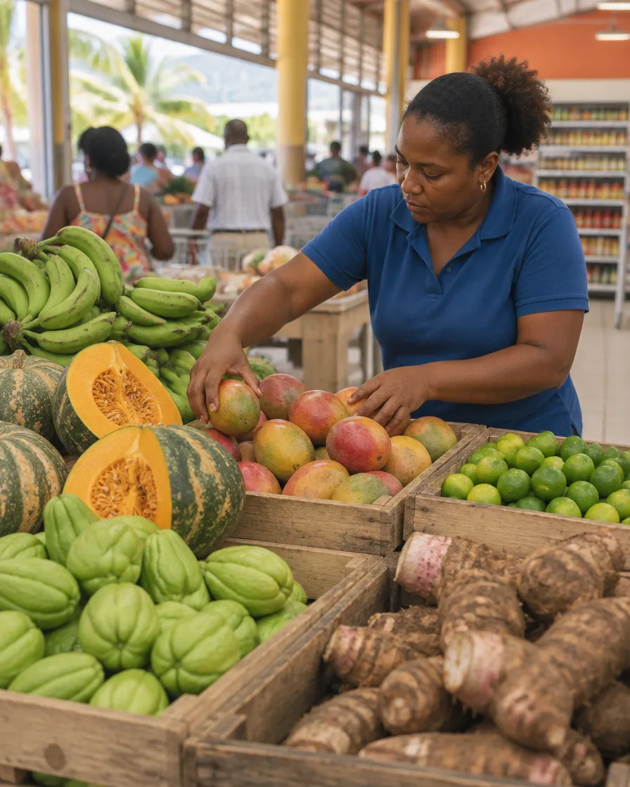
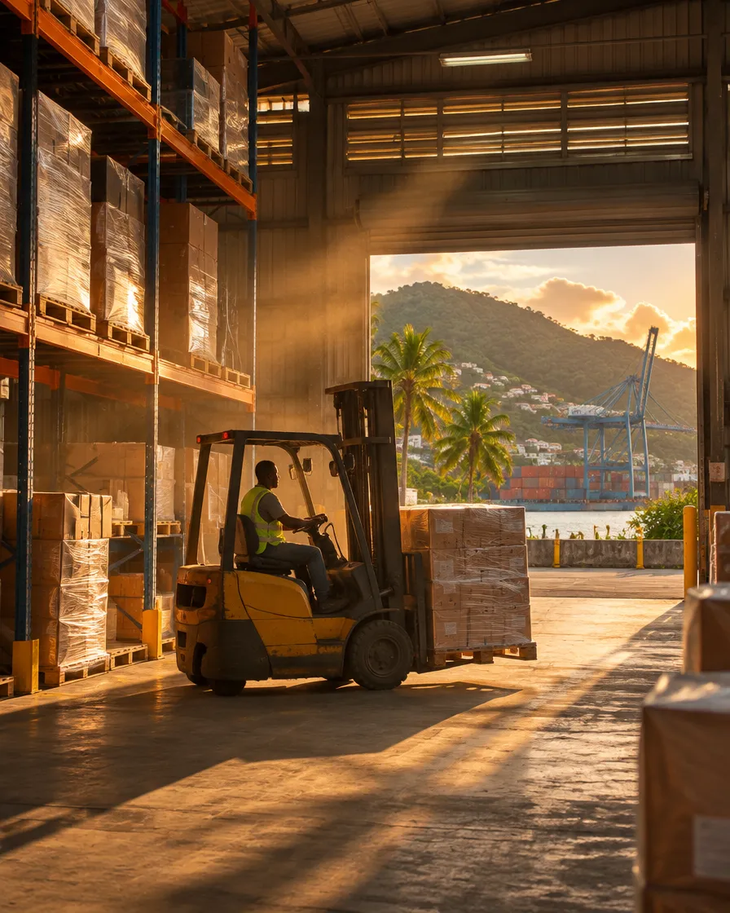
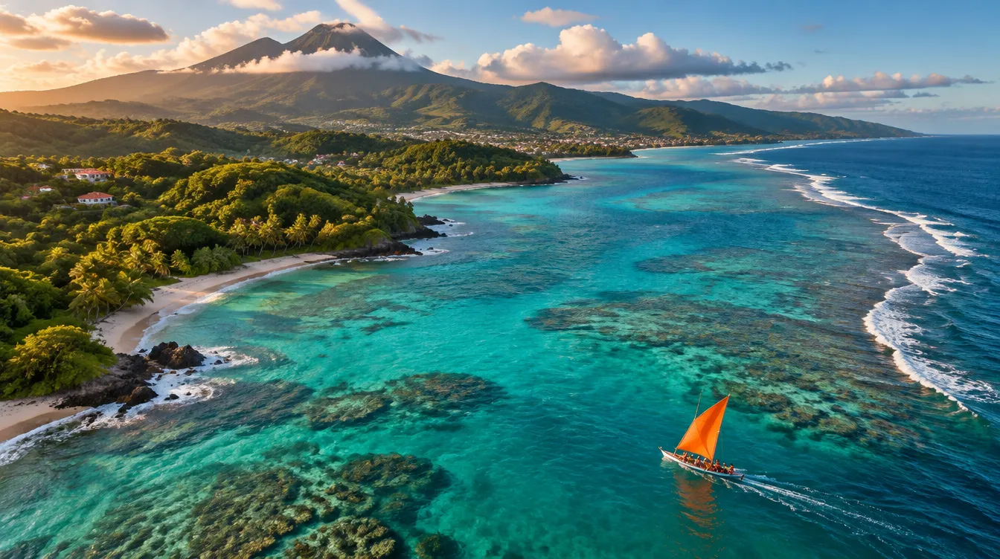

01
Distribution
Du hard discount au bio, du club-entrepôt au drive : six enseignes alimentaires qui servent les familles des Antilles, de Guyane et de La Réunion au quotidien.
Distribution, logistique, recrutement et intérim. Né en Martinique, le Groupe CréO réunit aujourd'hui 1 000 collaborateurs sur 7 territoires.
Patrick Fabre crée le Groupe CréO au Lamentin en 1992 avec une conviction : une entreprise avance grâce aux femmes et aux hommes qui la font. Trente ans plus tard, cette conviction tient toujours la barre.
Le groupe a grandi magasin après magasin, agence après agence, en restant attaché à ses territoires. Il a ouvert 20 nouveaux magasins depuis 2019 et vise une place de référence dans chacun de ses métiers.
Voir nos implantationsDes territoires.
Des magasins.
Des clients.
Un même engagement.
Chaque pôle a ses enseignes, ses équipes et son savoir-faire. Ensemble, ils couvrent toute la chaîne, de l'entrepôt au client.

Du hard discount au bio, du club-entrepôt au drive : six enseignes alimentaires qui servent les familles des Antilles, de Guyane et de La Réunion au quotidien.

Transit, entreposage, transport : nos équipes font arriver les marchandises jusqu'aux rayons, malgré l'éloignement et les contraintes de l'insularité.
Des agences et cabinets sur cinq territoires pour mettre en relation entreprises et talents, du premier emploi aux postes de direction.

Choisissez un territoire pour voir les enseignes et les équipes du groupe sur place.
Activités à détailler avec la direction de la communication.
Activités à détailler avec la direction de la communication.
En 2024, Leader Price devient Pli Bel Price, une enseigne 100 % locale, avec six marques créées aux côtés des industriels de Martinique.
1 000 personnes, des parcours qui commencent en magasin, en entrepôt ou en agence, et qui peuvent évoluer d'un métier à l'autre au sein du groupe.
Partenaire de la yole Pli Bel Price sur le Tour des Yoles de Martinique, le groupe soutient un patrimoine qui lui ressemble : un équipage, un même cap.
Magasins, entrepôts, agences, fonctions support : le groupe recrute en Martinique, en Guadeloupe, en Guyane, à La Réunion et à Mayotte.